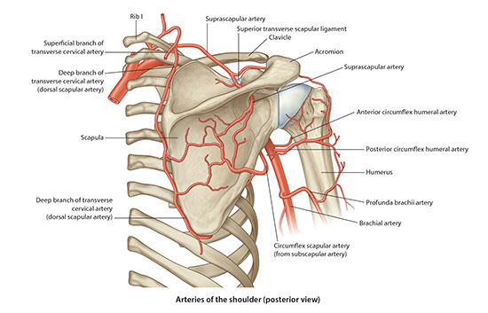
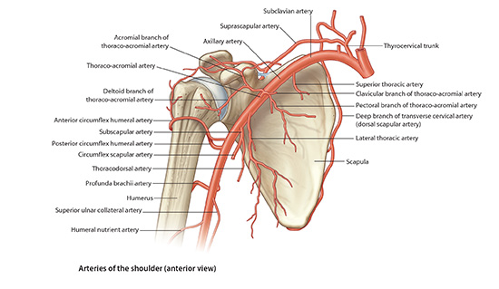

Lab2 - Module 2 - Anatomy of the Scapular Region: Page 4 of 7
Spaces of the Shoulder
|  |
| Tap on image to enlarge |
|  |
| Tap on image to enlarge |
| There are two spaces of the shoulder joint. These are the Quadrangular Space and the Triangular Space.. |
| Quadrangular Space - it is an area of the posterior shoulder in which the posterior humeral circumflex artery and the axillary nerve pass. Lateral border of the space is the surgical neck of the humerus, Medial border is the long head of the triceps, Superior border is teres minor, and the inferior border is teres major. Because the lateral border of the space is the surgical neck of the humerus a fracture may put the axillary nerve and posterior humeral circumflex artery at risk. |
| Triangular Space- it is an area in which the circumflex scapular artery passes. The lateral border is long head of triceps, superior border is teres minor, and inferior border is teres major. |